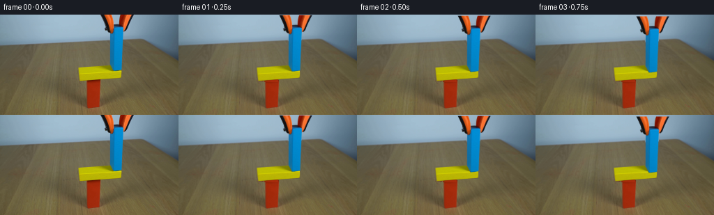
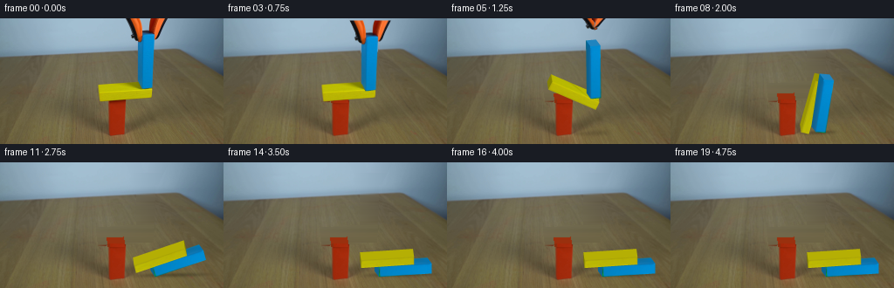

CODING AGENTS AS PIXEL WORLD MODELS
traex/GPT-6.1-Sol · 0182
点击播放 · 原生 RGB 像素
逐轮保存的候选
回放视频、检查图与代码变化。
每份候选均可单独播放。实际图片检查记录在下方工具轨迹中。
候选 01播放与检查图
点击播放 · 原生 RGB 像素


展开代码变化
--- 上一保存版本
+++ 本次保存版本
@@ -0,0 +1,217 @@
+from pathlib import Path
+import numpy as np
+from PIL import Image, ImageDraw
+import cv2
+from scipy.ndimage import gaussian_filter
+import artifact_io
+from dynamics import Body,contact,cross
+
+ROOT=Path(__file__).resolve().parent
+SRC=np.array(Image.open(ROOT/'first_frame.png').convert('RGB'))
+H,W=SRC.shape[:2]
+S=4
+
+def mask_poly(poly,scale=1):
+ im=Image.new('L',(W*scale,H*scale));ImageDraw.Draw(im).polygon([(float(x*scale),float(y*scale)) for x,y in poly],fill=255)
+ return np.array(im)/255.
+
+TOOL_L=[(143,-3),(159,-3),(162.7,10),(163.3,20),(162.9,23),(161.5,26.8),(158.2,27.1),(155,24.5),(153.5,23),(151,23),(149.5,19.1),(151.4,17.9),(151,14),(147,5)]
+TOOL_R=[(174,-3),(193,-3),(185.1,12.8),(183,17.8),(181.9,21.8),(179,24.3),(176.6,23.6),(176.6,19),(174.4,17),(172,16),(170.4,13.5),(170.8,6)]
+Y_QUAD=[(111.8,75.6),(173.2,71.2),(174.6,90.7),(113.1,95.5)]
+B_QUAD=[(162.8,13.5),(176.8,13.1),(176.8,35),(175.4,63),(175.3,79.7),(162.7,81),(157.4,72),(157.4,26.1)]
+
+def make_bg():
+ mask=np.maximum.reduce([mask_poly(p) for p in [TOOL_L,TOOL_R,Y_QUAD,B_QUAD]])
+ mask=cv2.dilate((mask*255).astype('uint8'),np.ones((3,3),np.uint8))
+ mask[95:,122:146]=0
+ bg=SRC.astype(float).copy()
+ # Rowwise interpolation restores the table and blue wall, without repainting elsewhere.
+ for y in range(H):
+ xs=np.flatnonzero(mask[y])
+ if not len(xs):continue
+ regions=np.split(xs,np.where(np.diff(xs)>1)[0]+1)
+ for xx in regions:
+ lo,hi=xx[0],xx[-1];l=max(0,lo-3);r=min(W-1,hi+3)
+ cl=np.mean(SRC[y,max(0,l-3):l+1],axis=0);cr=np.mean(SRC[y,r:min(W,r+4)],axis=0)
+ for x in xx:
+ q=(x-l)/(r-l);bg[y,x]=cl*(1-q)+cr*q
+ # Recover the newly revealed upper rim of the red support from its painted front.
+ red=mask_poly([(123.7,93.8),(142.9,92.5),(143,132.6),(124.8,134)])
+ for y in range(93,101):
+ for x in range(123,144):
+ if red[y,x]:
+ color=SRC[102+((y-93)%4),x].astype(float)
+ if x<126:color=np.array([137,46,14])
+ bg[y,x]=color
+ top=mask_poly([(123.6,93.7),(142.8,92.5),(141.5,85),(122.2,86.3)])
+ bg=bg*(1-top[...,None])+top[...,None]*np.array([154,48,14])
+ # Only the hidden part of the red block is reconstructed; all visible pixels stay native.
+ bg[97:]=SRC[97:]
+ return np.clip(bg,0,255).astype(np.uint8)
+
+BG=make_bg()
+YTOP=np.array([(113.1,85.1),(173.9,81.45),(172.65,72.5),(111.85,76.15)],np.float32)
+YFRONT=np.array([(113.1,85.1),(173.9,81.45),(173.1,90.6),(113.6,94.65)],np.float32)
+BFRONT=np.array([(163,20.1),(176.35,19.25),(174.55,79.7),(163,80.45)],np.float32)
+BSIDE=np.array([(158.0,26),(163,20.1),(163,80.45),(158,72)],np.float32)
+
+def extract(quad,w,h):
+ dst=np.array([[0,0],[w-1,0],[w-1,h-1],[0,h-1]],np.float32)
+ M=cv2.getPerspectiveTransform(quad,dst)
+ return cv2.warpPerspective(SRC,M,(w,h),flags=cv2.INTER_LINEAR).astype(float)
+
+yf=extract(YFRONT,244,40);yt=extract(YTOP,244,44)
+bf=extract(BFRONT,60,244);bs=extract(BSIDE,28,244)
+rng=np.random.default_rng(19)
+# Extend paint through the portions formerly shaded or occluded by the jaws.
+for tex,col in [(yt,[190,190,2]),(bf,[1,139,209]),(bs,[21,114,167])]:
+ if tex is yt:
+ dark=tex[:,:,0]<165
+ noise=rng.normal(0,1,tex.shape[:2])
+ for c in range(3):tex[:,:,c][dark]=col[c]+noise[dark]*(.7 if c==2 else 1)
+ else:
+ tex[:24]=tex[30:54]
+ tex[:8]=np.array(col)+rng.normal(0,.6,tex[:8].shape)
+# Keep fine wood/paint detail but not neighboring background colors at cut edges.
+yf[:,:,2]=np.minimum(yf[:,:,2],12)
+yf[:,:,0]=np.clip(yf[:,:,0],171,214);yf[:,:,1]=np.clip(yf[:,:,1],166,211)
+bf[:,:,0]=np.minimum(bf[:,:,0],7)
+
+
+def projected(points,p,a,depth):
+ points=np.asarray(points,float)
+ c,s=np.cos(a),np.sin(a);R=np.array([[c,-s],[s,c]])
+ xy=points[:,:2]@R.T+np.array(p)
+ xy[:,0]+=points[:,2]*depth[0]
+ xy[:,1]+=points[:,2]*depth[1]-.065*(xy[:,0]-144)
+ return xy
+
+def warp_face(canvas,tex,quad,shade=1):
+ hh,ww=tex.shape[:2]
+ fr=np.array([[0,0],[ww-1,0],[ww-1,hh-1],[0,hh-1]],np.float32)
+ q=np.asarray(quad,np.float32)*S
+ M=cv2.getPerspectiveTransform(fr,q)
+ mask=Image.new('L',(W*S,H*S));ImageDraw.Draw(mask).polygon([tuple(p) for p in q],fill=255)
+ alpha=np.array(mask,dtype=float)/255
+ out=cv2.warpPerspective(np.clip(tex*shade,0,255).astype(np.uint8),M,(W*S,H*S),flags=cv2.INTER_LINEAR,borderMode=cv2.BORDER_REPLICATE)
+ canvas[:]=canvas*(1-alpha[:,:,None])+out*alpha[:,:,None]
+
+def render_block(canvas,kind,p,a):
+ if kind=='y':w,h=60.4,9.1;d=(-1.25,-9.1);front,top=yf,yt;endcol=[150,148,4]
+ else:w,h=11.6,60.3;d=(-5,-7.1);front,top=bf,np.full((32,60,3),[32,133,192],float);endcol=[22,114,166]
+ # Local cuboid: z=1 is its rear edge. The paint is attached to each face.
+ V=np.array([[-w/2,-h/2,0],[w/2,-h/2,0],[w/2,h/2,0],[-w/2,h/2,0],[-w/2,-h/2,1],[w/2,-h/2,1],[w/2,h/2,1],[-w/2,h/2,1]])
+ q=projected(V,p,a,d)
+ normals=[np.array([0,-1]),np.array([1,0]),np.array([0,1]),np.array([-1,0])]
+ c,s=np.cos(a),np.sin(a);R=np.array([[c,-s],[s,c]])
+ quads=[[0,1,5,4],[1,2,6,5],[2,3,7,6],[3,0,4,7]]
+ for j,n in enumerate(normals):
+ nr=R@n
+ if np.dot(nr,np.array(d))<=0:continue
+ if j==0:tex=top
+ elif j==2:tex=np.full((44,244,3),[182,176,5] if kind=='y' else [15,115,168],float)
+ elif kind=='b':tex=bs
+ else:tex=np.full((40,24,3),endcol,float)+rng.normal(0,.6,(40,24,3))
+ shade=.79+.21*max(0,-nr[1]) if kind=='y' else .88+.12*max(0,-nr[1])
+ warp_face(canvas,tex,q[quads[j]],shade)
+ warp_face(canvas,front,q[:4],1)
+ return q
+
+
+def tools(canvas,dx,dy,op):
+ # Each jaw pivots away from the blue block before the grabber retracts upward.
+ for poly,pivot,ang in [(TOOL_L,(151,-7),-op),(TOOL_R,(185,-7),op)]:
+ m=mask_poly(poly,S)
+ source=cv2.resize(SRC,(W*S,H*S),interpolation=cv2.INTER_CUBIC).astype(float)
+ c,s=np.cos(ang),np.sin(ang);R=np.array([[c,-s],[s,c]])
+ p=np.array(pivot)*S
+ M=np.column_stack([R,p-R@p+np.array([dx,dy])*S]).astype(np.float32)
+ alpha=cv2.warpAffine(m.astype(np.float32),M,(W*S,H*S),flags=cv2.INTER_LINEAR)
+ rgba=cv2.warpAffine((source*m[:,:,None]).astype(np.float32),M,(W*S,H*S),flags=cv2.INTER_LINEAR)
+ canvas[:]=canvas*(1-alpha[:,:,None])+rgba
+
+
+def simulate():
+ Y=Body([143.65,88.9],[60.4,9.1],1);B=Body([168.8,54.1],[11.6,60.3],1.12)
+ red=Body([134.1,113.7],[18.2,41.2],0);floor=Body([128,183.6],[1000,100],0)
+ dyn=[Y,B];pairs=[(Y,red),(B,red),(Y,B),(Y,floor),(B,floor)]
+ dt=1/600;snaps=[]
+ for k in range(1951):
+ if k%150==0:snaps.append([(o.p.copy(),o.a) for o in dyn])
+ for o in dyn:o.v[1]+=520*dt;o.p+=o.v*dt;o.a+=o.w*dt
+ manif=[]
+ for A,B in pairs:
+ hit=contact(A,B)
+ if hit:
+ n,pen,ps=hit;manif.append((A,B,n,pen,ps,np.zeros(len(ps)),np.zeros(len(ps))))
+ for _ in range(14):
+ for A,B,n,pen,ps,acc,acf in manif:
+ tangent=np.array([-n[1],n[0]])
+ for j,p in enumerate(ps):
+ ra,rb=p-A.p,p-B.p
+ va=A.v+A.w*np.array([-ra[1],ra[0]]);vb=B.v+B.w*np.array([-rb[1],rb[0]])
+ den=A.im+B.im+cross(ra,n)**2*A.ii+cross(rb,n)**2*B.ii
+ jn=(-(vb-va)@n+.18*max(0,pen-.02)/dt)/den
+ new=max(0,acc[j]+jn);jn=new-acc[j];acc[j]=new
+ imp=jn*n;A.v-=imp*A.im;A.w-=cross(ra,imp)*A.ii;B.v+=imp*B.im;B.w+=cross(rb,imp)*B.ii
+ va=A.v+A.w*np.array([-ra[1],ra[0]]);vb=B.v+B.w*np.array([-rb[1],rb[0]])
+ den=A.im+B.im+cross(ra,tangent)**2*A.ii+cross(rb,tangent)**2*B.ii
+ jt=-(vb-va)@tangent/den;new=np.clip(acf[j]+jt,-.38*acc[j],.38*acc[j]);jt=new-acf[j];acf[j]=new
+ imp=jt*tangent;A.v-=imp*A.im;A.w-=cross(ra,imp)*A.ii;B.v+=imp*B.im;B.w+=cross(rb,imp)*B.ii
+ for o in dyn:o.v*=.9999;o.w*=.9999
+ return snaps
+
+
+def shadows(canvas,states):
+ for kind,(p,a) in zip(['y','b'],states):
+ w,h=(60.4,9.1) if kind=='y' else (11.6,60.3)
+ # Soft table shadow follows the falling piece, shrinking as it approaches contact.
+ vv=projected([[-w/2,-h/2,0],[w/2,-h/2,0],[w/2,h/2,0],[-w/2,h/2,0]],p,a,(0,0))
+ minx,maxx=vv[:,0].min(),vv[:,0].max()
+ gap=max(0,133.6-(p[1]+abs(np.sin(a))*w/2+abs(np.cos(a))*h/2))
+ x=(minx+maxx)/2+gap*.10;y=133.4-.065*(x-144)-1
+ yy,xx=np.mgrid[:H*S,:W*S]/S
+ rx=(maxx-minx)/2+3+gap*.06;ry=2+gap*.025
+ alpha=np.exp(-((xx-x)/rx)**4-((yy-y)/ry)**2)*(.17*np.exp(-gap/48))
+ # Red support stays opaque in front of the cast shadows.
+ alpha[95*S:136*S,123*S:145*S]=0
+ canvas[:]*=1-alpha[:,:,None]
+
+
+def main():
+ states=simulate();frames=[SRC.copy()]
+ native_y=mask_poly(Y_QUAD,S);native_b=mask_poly(B_QUAD,S)
+ # Native pixels provide an exact match during the gentle final lowering.
+ bigsrc=cv2.resize(SRC,(W*S,H*S),interpolation=cv2.INTER_CUBIC).astype(float)
+ for i in range(1,20):
+ t=i/4
+ canvas=cv2.resize(BG,(W*S,H*S),interpolation=cv2.INTER_CUBIC).astype(float)
+ if i<=4:
+ canvas=canvas*(1-native_y[:,:,None])+bigsrc*native_y[:,:,None]
+ dy=2.5*min(1,t/.75)
+ M=np.float32([[1,0,0],[0,1,dy*S]])
+ bm=cv2.warpAffine(native_b.astype(np.float32),M,(W*S,H*S))
+ bp=cv2.warpAffine((bigsrc*native_b[:,:,None]).astype(np.float32),M,(W*S,H*S))
+ canvas=canvas*(1-bm[:,:,None])+bp
+ else:
+ st=states[min(i-4,len(states)-1)]
+ shadows(canvas,st)
+ # Front surfaces remain textured, and newly exposed faces use matching paint.
+ if st[1][0][1] < st[0][0][1]:order=[0,1]
+ else:order=[1,0]
+ for j in order:render_block(canvas,'y' if j==0 else 'b',*st[j])
+ if t<=.75:tools(canvas,0,2.5*min(1,t/.75),0)
+ else:
+ op=.32*min(1,(t-.75)/.5)
+ lift=2.5-48*max(0,t-1.0)
+ tools(canvas,2*max(0,t-1.0),lift,op)
+ frame=cv2.resize(np.clip(canvas,0,255).astype(np.uint8),(W,H),interpolation=cv2.INTER_AREA)
+ frames.append(frame)
+ frames=np.asarray(frames,dtype=np.uint8)
+ artifact_io.save(frames,ROOT)
+ (ROOT/'.tmp').mkdir(exist_ok=True)
+ Image.fromarray(BG).save(ROOT/'.tmp/background.png')
+ print('saved',frames.shape,'exact first frame:',np.array_equal(frames[0],SRC))
+ print('poses:',[(i+4,[(p.round(1).tolist(),round(float(a*180/np.pi),1)) for p,a in st]) for i,st in enumerate(states)])
+
+if __name__=='__main__':main()
候选 02播放与检查图
点击播放 · 原生 RGB 像素

展开代码变化
--- 上一保存版本
+++ 本次保存版本
@@ -18,6 +18,7 @@
TOOL_L=[(143,-3),(159,-3),(162.7,10),(163.3,20),(162.9,23),(161.5,26.8),(158.2,27.1),(155,24.5),(153.5,23),(151,23),(149.5,19.1),(151.4,17.9),(151,14),(147,5)]
TOOL_R=[(174,-3),(193,-3),(185.1,12.8),(183,17.8),(181.9,21.8),(179,24.3),(176.6,23.6),(176.6,19),(174.4,17),(172,16),(170.4,13.5),(170.8,6)]
Y_QUAD=[(111.8,75.6),(173.2,71.2),(174.6,90.7),(113.1,95.5)]
+B_NATIVE=[(162.8,13.5),(173.9,13.7),(176.8,18.8),(176.8,35),(175.4,63),(175.3,79.7),(162.7,81),(157.4,72),(157.4,27.6),(161.9,25.8),(162.8,22)]
B_QUAD=[(162.8,13.5),(176.8,13.1),(176.8,35),(175.4,63),(175.3,79.7),(162.7,81),(157.4,72),(157.4,26.1)]
def make_bg():
@@ -83,7 +84,7 @@
c,s=np.cos(a),np.sin(a);R=np.array([[c,-s],[s,c]])
xy=points[:,:2]@R.T+np.array(p)
xy[:,0]+=points[:,2]*depth[0]
- xy[:,1]+=points[:,2]*depth[1]-.065*(xy[:,0]-144)
+ xy[:,1]+=points[:,2]*depth[1]-.065*(xy[:,0]-144)-.8
return xy
def warp_face(canvas,tex,quad,shade=1):
@@ -180,15 +181,16 @@
def main():
states=simulate();frames=[SRC.copy()]
- native_y=mask_poly(Y_QUAD,S);native_b=mask_poly(B_QUAD,S)
+ native_y=mask_poly(Y_QUAD,S)*(1-mask_poly(B_QUAD,S));native_b=mask_poly(B_NATIVE,S)
# Native pixels provide an exact match during the gentle final lowering.
- bigsrc=cv2.resize(SRC,(W*S,H*S),interpolation=cv2.INTER_CUBIC).astype(float)
+ bigsrc=cv2.resize(SRC,(W*S,H*S),interpolation=cv2.INTER_NEAREST).astype(float)
for i in range(1,20):
t=i/4
- canvas=cv2.resize(BG,(W*S,H*S),interpolation=cv2.INTER_CUBIC).astype(float)
+ canvas=cv2.resize(BG,(W*S,H*S),interpolation=cv2.INTER_NEAREST).astype(float)
if i<=4:
+ render_block(canvas,'y',[143.65,88.7],0)
canvas=canvas*(1-native_y[:,:,None])+bigsrc*native_y[:,:,None]
- dy=2.5*min(1,t/.75)
+ dy=.8*min(1,t/.75)
M=np.float32([[1,0,0],[0,1,dy*S]])
bm=cv2.warpAffine(native_b.astype(np.float32),M,(W*S,H*S))
bp=cv2.warpAffine((bigsrc*native_b[:,:,None]).astype(np.float32),M,(W*S,H*S))
@@ -200,10 +202,10 @@
if st[1][0][1] < st[0][0][1]:order=[0,1]
else:order=[1,0]
for j in order:render_block(canvas,'y' if j==0 else 'b',*st[j])
- if t<=.75:tools(canvas,0,2.5*min(1,t/.75),0)
+ if t<=.75:tools(canvas,0,.8*min(1,t/.75),0)
else:
op=.32*min(1,(t-.75)/.5)
- lift=2.5-48*max(0,t-1.0)
+ lift=.8-48*max(0,t-1.0)
tools(canvas,2*max(0,t-1.0),lift,op)
frame=cv2.resize(np.clip(canvas,0,255).astype(np.uint8),(W,H),interpolation=cv2.INTER_AREA)
frames.append(frame)
候选 03播放与检查图
可观测工具轨迹
实际执行的命令与返回图片。
命令 1exit 0
/bin/bash -lc "ls -la && cat prompt.txt && printf '\\n---RULES---\\n' && cat GENERATION_RULES.md"
命令 2exit 0
/bin/bash -lc "cat artifact_io.py && python - <<'PY'
from PIL import Image
import numpy as np
im=np.array(Image.open('first_frame.png'))
print(im.shape)
# color dominant summaries and ascii map hue labels
from collections import Counter
print(Counter(map(tuple,im.reshape(-1,3))).most_common(25))
# hue categorization of 2x3 cells
for y in range(0,144,3):
s=''
for x in range(0,256,3):
p=np.median(im[y:y+3,x:x+3],axis=(0,1));r,g,b=p
if max(p)-min(p)<18: c=' ' if np.mean(p)>170 else ('.' if np.mean(p)>105 else ('+' if np.mean(p)>60 else '#'))
elif r>g*1.25 and r>b*1.35:c='R' if g<80 else 'o'
elif r> b*1.45 and g>b*1.4:c='Y'
elif b>r*1.3 and b>g*1.1:c='B'
else:c='.'
s+=c
print(s)
PY"命令 3exit 0
/bin/bash -lc "python - <<'PY'
from PIL import Image
import numpy as np
from scipy import ndimage
im=np.array(Image.open('first_frame.png')).astype(float)
r,g,b=im.transpose(2,0,1)
masks={'yellow':(r>135)&(g>115)&(b<100)&(r>g*.95),'red':(r>85)&(r>g*1.75)&(r>b*1.8),'blue':(b>r*1.7)&(g>r*1.25)}
for name,m in masks.items():
ls,n=ndimage.label(m)
print(name)
for j in range(1,n+1):
yy,xx=np.where(ls==j)
if len(xx)>6:print(len(xx),(xx.min(),yy.min(),xx.max(),yy.max()),'mean',im[ls==j].mean(0))
print('pixels around objects every 4:')
for y in range(0,140,4):
print(y,' '.join(f'{x}:{tuple(im[y,x].astype(int))}' for x in range(104,187,4)))
PY"命令 4exit 0
/bin/bash -lc "python - <<'PY'
from PIL import Image
import numpy as np
im=np.array(Image.open('first_frame.png')).astype(float)
# one pixel maps, closer classification
for y in range(0,96,2):
s=''
for x in range(108,192):
r,g,b=im[y,x]
if b>r*1.7 and g>r*1.25: c='B'
elif r>135 and g>115 and b<100 and r>g*.95:c='Y'
elif r>85 and r>g*1.75 and r>b*1.8:c='O'
elif max(r,g,b)<75:c='#'
elif max(r,g,b)-min(r,g,b)<20:c='.'
else:c=' '
s+=c
print(f'{y:3}',s)
print('Y ranges; B ranges')
for y in range(65,96):
r,g,b=im[y].T
yy=np.where((r>135)&(g>115)&(b<100)&(r>g*.95))[0]
bb=np.where((b>r*1.7)&(g>r*1.25))[0]
print(y,'Y',yy[(yy>100)&(yy<190)].tolist(),'B',bb[(bb>150)&(bb<180)].tolist())
PY"命令 5exit 0
/bin/bash -lc "python - <<'PY'
import numpy as np
from PIL import Image
im=np.array(Image.open('first_frame.png')).astype(float)
for y in range(69,97):
s=''
for x in range(109,179):
r,g,b=im[y,x]
if b>r*1.7 and g>r*1.25:c='B'
elif r>135 and g>115 and b<100 and r>g*.95:c='0' if r<160 else '1' if r<180 else '2' if r<200 else '3' if r<220 else '4' if r<240 else '5'
else:c='.'
s+=c
print(y,s)
print('tool silhouette rows: dark/orange intervals')
for y in range(29):
r,g,b=im[y].T
m=((r>g*1.5)&(r>b*1.5)) | ((r<100)&(g<100)&(b<110))
xx=np.where(m&(np.arange(256)>135)&(np.arange(256)<195))[0]
print(y,xx.tolist())
PY"命令 6exit 0
/bin/bash -lc "python - <<'PY'
import numpy as np
from PIL import Image
im=np.array(Image.open('first_frame.png'))
for y in [14,15,16,17,18,19,22,26,30,70,73,76,79,80,81,82]:
print(y, ' '.join('%d:%d,%d,%d'%(x,*im[y,x]) for x in range(156,179)))
PY"命令 7exit 0
/bin/bash -lc "python - <<'PY'
import numpy as np
from PIL import Image
im=np.array(Image.open('first_frame.png')).astype(float)
for y in range(67,98):
p=im[y];r,g,b=p.T
m=(b<r*.4)&(g>r*.72)&(r>100)&(g>85)&(np.arange(256)>100)&(np.arange(256)<185)
x=np.where(m)[0]
if len(x):print(y,x.min(),x.max(), [(a,tuple(p[a].astype(int))) for a in range(x.min(),x.max()+1,5)])
print('RED borders')
for y in range(89,137):
p=im[y];r,g,b=p.T;m=(r>g*1.45)&(r>b*1.7)&(r>100)&(np.arange(256)>110)&(np.arange(256)<150)
x=np.where(m)[0]
if len(x):print(y,x.min(),x.max())
PY"命令 8exit 0
/bin/bash -lc "python - <<'PY'
import numpy as np
from PIL import Image
im=np.array(Image.open('first_frame.png'))
for y in range(32,80,2):
print(y,' '.join(f'{x}:{im[y,x].tolist()}' for x in [150,153,155,157,158,174,175,177,178,180,183,185,190,196]))
PY"命令 9exit 0
/bin/bash -lc "python - <<'PY'
import cv2,scipy,numpy,PIL
print('cv2',cv2.__version__)
PY"命令 10exit 0
/bin/bash -lc "cat > .tmp/test_dynamics.py <<'PY'
import numpy as np
class Body:
def __init__(self,p,size,m,angle=0):
self.p=np.array(p,dtype=float);self.size=np.array(size,float);self.m=m
self.im=1/m if m else 0;self.ii=12/(m*np.sum(self.size**2)) if m else 0
self.a=angle;self.v=np.zeros(2);self.w=0
def verts(self):
c,s=np.cos(self.a),np.sin(self.a);R=np.array([[c,-s],[s,c]])
return np.array([[-1,-1],[1,-1],[1,1],[-1,1]])*self.size/2@R.T+self.p
def cross(a,b):return a[0]*b[1]-a[1]*b[0]
def clip(poly,quad):
for k in range(4):
a,b=quad[k],quad[(k+1)%4];e=b-a
new=[]
if len(poly)==0:return []
for j in range(len(poly)):
P,Q=poly[j-1],poly[j];dP=cross(e,P-a);dQ=cross(e,Q-a)
if (dP>=0)"'!=(dQ>=0):new.append(P+(Q-P)*dP/(dP-dQ))
if dQ>=0:new.append(Q)
poly=new
return np.array(poly)
def contact(A,B):
av,bv=A.verts(),B.verts();best=1e10;n=None
for v in [av,bv]:
for e in [v[1]-v[0],v[3]-v[0]]:
axis=np.array([-e[1],e[0]])/np.linalg.norm(e)
aa,bb=av@axis,bv@axis;pen=min(aa.max(),bb.max())-max(aa.min(),bb.min())
if pen<0:return None
if pen<best:best=pen;n=axis
if (B.p-A.p)@n<0:n=-n
poly=clip(av,bv)
if len(poly)==0:return None
t=np.array([-n[1],n[0]]);d=poly@t
points=[poly[np.argmin(d)],poly[np.argmax(d)]]
if np.linalg.norm(points[0]-points[1])<.1:points=points[:1]
return n,best,points
def run():
y=Body([144,88.9],[60,9],1);b=Body([169,54.4],[11,60],1.15)
red=Body([134,113.5],[18,41],0);floor=Body([128,184],[1000,100],0)
dyn=[y,b];pairs=[(y,red),(b,red),(y,b),(y,floor),(b,floor)]
dt=1/600;snaps=[]
for k in range(1801):
if k%150==0:snaps.append([(o.p.copy(),o.a,o.v.copy(),o.w) for o in dyn])
for o in dyn:o.v[1]+=520*dt;o.p+=o.v*dt;o.a+=o.w*dt
manif=[]
for A,B in pairs:
hit=contact(A,B)
if hit:
n,pen,ps=hit
manif.append((A,B,n,pen,ps,np.zeros(len(ps)),np.zeros(len(ps))))
for it in range(16):
for A,B,n,pen,ps,acc,acfr in manif:
tangent=np.array([-n[1],n[0]])
for j,p in enumerate(ps):
ra,rb=p-A.p,p-B.p
va=A.v+A.w*np.array([-ra[1],ra[0]]);vb=B.v+B.w*np.array([-rb[1],rb[0]])
vn=(vb-va)@n
denom=A.im+B.im+cross(ra,n)**2*A.ii+cross(rb,n)**2*B.ii
jn=(-vn+0.18*max(0,pen-.02)/dt)/denom
new=max(0,acc[j]+jn);jn=new-acc[j];acc[j]=new
imp=jn*n
A.v-=imp*A.im;A.w-=cross(ra,imp)*A.ii
B.v+=imp*B.im;B.w+=cross(rb,imp)*B.ii
va=A.v+A.w*np.array([-ra[1],ra[0]]);vb=B.v+B.w*np.array([-rb[1],rb[0]])
den=A.im+B.im+cross(ra,tangent)**2*A.ii+cross(rb,tangent)**2*B.ii
jt=-(vb-va)@tangent/den
new=np.clip(acfr[j]+jt,-.38*acc[j],.38*acc[j]);jt=new-acfr[j];acfr[j]=new
imp=jt*tangent
A.v-=imp*A.im;A.w-=cross(ra,imp)*A.ii
B.v+=imp*B.im;B.w+=cross(rb,imp)*B.ii
for o in dyn:o.v*=.9999;o.w*=.9999
return snaps
if __name__=='"'__main__':
for i,s in enumerate(run()):print(i/4,[(np.round(p,2),round(a*180/np.pi,1),np.round(v,1),round(w,1)) for p,a,v,w in s])
PY
python .tmp/test_dynamics.py"命令 11exit 0
/bin/bash -lc "cp .tmp/test_dynamics.py dynamics.py
cat > generate.py <<'PY'
from pathlib import Path
import numpy as np
from PIL import Image, ImageDraw
import cv2
from scipy.ndimage import gaussian_filter
import artifact_io
from dynamics import Body,contact,cross
ROOT=Path(__file__).resolve().parent
SRC=np.array(Image.open(ROOT/'first_frame.png').convert('RGB'))
H,W=SRC.shape[:2]
S=4
def mask_poly(poly,scale=1):
im=Image.new('L',(W*scale,H*scale));ImageDraw.Draw(im).polygon([(float(x*scale),float(y*scale)) for x,y in poly],fill=255)
return np.array(im)/255.
TOOL_L=[(143,-3),(159,-3),(162.7,10),(163.3,20),(162.9,23),(161.5,26.8),(158.2,27.1),(155,24.5),(153.5,23),(151,23),(149.5,19.1),(151.4,17.9),(151,14),(147,5)]
TOOL_R=[(174,-3),(193,-3),(185.1,12.8),(183,17.8),(181.9,21.8),(179,24.3),(176.6,23.6),(176.6,19),(174.4,17),(172,16),(170.4,13.5),(170.8,6)]
Y_QUAD=[(111.8,75.6),(173.2,71.2),(174.6,90.7),(113.1,95.5)]
B_QUAD=[(162.8,13.5),(176.8,13.1),(176.8,35),(175.4,63),(175.3,79.7),(162.7,81),(157.4,72),(157.4,26.1)]
def make_bg():
mask=np.maximum.reduce([mask_poly(p) for p in [TOOL_L,TOOL_R,Y_QUAD,B_QUAD]])
mask=cv2.dilate((mask*255).astype('uint8'),np.ones((3,3),np.uint8))
mask[95:,122:146]=0
bg=SRC.astype(float).copy()
# Rowwise interpolation restores the table and blue wall, without repainting elsewhere.
for y in range(H):
xs=np.flatnonzero(mask[y])
if not len(xs):continue
regions=np.split(xs,np.where(np.diff(xs)>1)[0]+1)
for xx in regions:
lo,hi=xx[0],xx[-1];l=max(0,lo-3);r=min(W-1,hi+3)
cl=np.mean(SRC[y,max(0,l-3):l+1],axis=0);cr=np.mean(SRC[y,r:min(W,r+4)],axis=0)
for x in xx:
q=(x-l)/(r-l);bg[y,x]=cl*(1-q)+cr*q
# Recover the newly revealed upper rim of the red support from its painted front.
red=mask_poly([(123.7,93.8),(142.9,92.5),(143,132.6),(124.8,134)])
for y in range(93,101):
for x in range(123,144):
if red[y,x]:
color=SRC[102+((y-93)%4),x].astype(float)
if x<126:color=np.array([137,46,14])
bg[y,x]=color
top=mask_poly([(123.6,93.7),(142.8,92.5),(141.5,85),(122.2,86.3)])
bg=bg*(1-top[...,None])+top[...,None]*np.array([154,48,14])
# Only the hidden part of the red block is reconstructed; all visible pixels stay native.
bg[97:]=SRC[97:]
return np.clip(bg,0,255).astype(np.uint8)
BG=make_bg()
YTOP=np.array([(113.1,85.1),(173.9,81.45),(172.65,72.5),(111.85,76.15)],np.float32)
YFRONT=np.array([(113.1,85.1),(173.9,81.45),(173.1,90.6),(113.6,94.65)],np.float32)
BFRONT=np.array([(163,20.1),(176.35,19.25),(174.55,79.7),(163,80.45)],np.float32)
BSIDE=np.array([(158.0,26),(163,20.1),(163,80.45),(158,72)],np.float32)
def extract(quad,w,h):
dst=np.array([[0,0],[w-1,0],[w-1,h-1],[0,h-1]],np.float32)
M=cv2.getPerspectiveTransform(quad,dst)
return cv2.warpPerspective(SRC,M,(w,h),flags=cv2.INTER_LINEAR).astype(float)
yf=extract(YFRONT,244,40);yt=extract(YTOP,244,44)
bf=extract(BFRONT,60,244);bs=extract(BSIDE,28,244)
rng=np.random.default_rng(19)
# Extend paint through the portions formerly shaded or occluded by the jaws.
for tex,col in [(yt,[190,190,2]),(bf,[1,139,209]),(bs,[21,114,167])]:
if tex is yt:
dark=tex[:,:,0]<165
noise=rng.normal(0,1,tex.shape[:2])
for c in range(3):tex[:,:,c][dark]=col[c]+noise[dark]*(.7 if c==2 else 1)
else:
tex[:24]=tex[30:54]
tex[:8]=np.array(col)+rng.normal(0,.6,tex[:8].shape)
# Keep fine wood/paint detail but not neighboring background colors at cut edges.
yf[:,:,2]=np.minimum(yf[:,:,2],12)
yf[:,:,0]=np.clip(yf[:,:,0],171,214);yf[:,:,1]=np.clip(yf[:,:,1],166,211)
bf[:,:,0]=np.minimum(bf[:,:,0],7)
def projected(points,p,a,depth):
points=np.asarray(points,float)
c,s=np.cos(a),np.sin(a);R=np.array([[c,-s],[s,c]])
xy=points[:,:2]@R.T+np.array(p)
xy[:,0]+=points[:,2]*depth[0]
xy[:,1]+=points[:,2]*depth[1]-.065*(xy[:,0]-144)
return xy
def warp_face(canvas,tex,quad,shade=1):
hh,ww=tex.shape[:2]
fr=np.array([[0,0],[ww-1,0],[ww-1,hh-1],[0,hh-1]],np.float32)
q=np.asarray(quad,np.float32)*S
M=cv2.getPerspectiveTransform(fr,q)
mask=Image.new('L',(W*S,H*S));ImageDraw.Draw(mask).polygon([tuple(p) for p in q],fill=255)
alpha=np.array(mask,dtype=float)/255
out=cv2.warpPerspective(np.clip(tex*shade,0,255).astype(np.uint8),M,(W*S,H*S),flags=cv2.INTER_LINEAR,borderMode=cv2.BORDER_REPLICATE)
canvas[:]=canvas*(1-alpha[:,:,None])+out*alpha[:,:,None]
def render_block(canvas,kind,p,a):
if kind=='y':w,h=60.4,9.1;d=(-1.25,-9.1);front,top=yf,yt;endcol=[150,148,4]
else:w,h=11.6,60.3;d=(-5,-7.1);front,top=bf,np.full((32,60,3),[32,133,192],float);endcol=[22,114,166]
# Local cuboid: z=1 is its rear edge. The paint is attached to each face.
V=np.array([[-w/2,-h/2,0],[w/2,-h/2,0],[w/2,h/2,0],[-w/2,h/2,0],[-w/2,-h/2,1],[w/2,-h/2,1],[w/2,h/2,1],[-w/2,h/2,1]])
q=projected(V,p,a,d)
normals=[np.array([0,-1]),np.array([1,0]),np.array([0,1]),np.array([-1,0])]
c,s=np.cos(a),np.sin(a);R=np.array([[c,-s],[s,c]])
quads=[[0,1,5,4],[1,2,6,5],[2,3,7,6],[3,0,4,7]]
for j,n in enumerate(normals):
nr=R@n
if np.dot(nr,np.array(d))<=0:continue
if j==0:tex=top
elif j==2:tex=np.full((44,244,3),[182,176,5] if kind=='y' else [15,115,168],float)
elif kind=='b':tex=bs
else:tex=np.full((40,24,3),endcol,float)+rng.normal(0,.6,(40,24,3))
shade=.79+.21*max(0,-nr[1]) if kind=='y' else .88+.12*max(0,-nr[1])
warp_face(canvas,tex,q[quads[j]],shade)
warp_face(canvas,front,q[:4],1)
return q
def tools(canvas,dx,dy,op):
# Each jaw pivots away from the blue block before the grabber retracts upward.
for poly,pivot,ang in [(TOOL_L,(151,-7),-op),(TOOL_R,(185,-7),op)]:
m=mask_poly(poly,S)
source=cv2.resize(SRC,(W*S,H*S),interpolation=cv2.INTER_CUBIC).astype(float)
c,s=np.cos(ang),np.sin(ang);R=np.array([[c,-s],[s,c]])
p=np.array(pivot)*S
M=np.column_stack([R,p-R@p+np.array([dx,dy])*S]).astype(np.float32)
alpha=cv2.warpAffine(m.astype(np.float32),M,(W*S,H*S),flags=cv2.INTER_LINEAR)
rgba=cv2.warpAffine((source*m[:,:,None]).astype(np.float32),M,(W*S,H*S),flags=cv2.INTER_LINEAR)
canvas[:]=canvas*(1-alpha[:,:,None])+rgba
def simulate():
Y=Body([143.65,88.9],[60.4,9.1],1);B=Body([168.8,54.1],[11.6,60.3],1.12)
red=Body([134.1,113.7],[18.2,41.2],0);floor=Body([128,183.6],[1000,100],0)
dyn=[Y,B];pairs=[(Y,red),(B,red),(Y,B),(Y,floor),(B,floor)]
dt=1/600;snaps=[]
for k in range(1951):
if k%150==0:snaps.append([(o.p.copy(),o.a) for o in dyn])
for o in dyn:o.v[1]+=520*dt;o.p+=o.v*dt;o.a+=o.w*dt
manif=[]
for A,B in pairs:
hit=contact(A,B)
if hit:
n,pen,ps=hit;manif.append((A,B,n,pen,ps,np.zeros(len(ps)),np.zeros(len(ps))))
for _ in range(14):
for A,B,n,pen,ps,acc,acf in manif:
tangent=np.array([-n[1],n[0]])
for j,p in enumerate(ps):
ra,rb=p-A.p,p-B.p
va=A.v+A.w*np.array([-ra[1],ra[0]]);vb=B.v+B.w*np.array([-rb[1],rb[0]])
den=A.im+B.im+cross(ra,n)**2*A.ii+cross(rb,n)**2*B.ii
jn=(-(vb-va)@n+.18*max(0,pen-.02)/dt)/den
new=max(0,acc[j]+jn);jn=new-acc[j];acc[j]=new
imp=jn*n;A.v-=imp*A.im;A.w-=cross(ra,imp)*A.ii;B.v+=imp*B.im;B.w+=cross(rb,imp)*B.ii
va=A.v+A.w*np.array([-ra[1],ra[0]]);vb=B.v+B.w*np.array([-rb[1],rb[0]])
den=A.im+B.im+cross(ra,tangent)**2*A.ii+cross(rb,tangent)**2*B.ii
jt=-(vb-va)@tangent/den;new=np.clip(acf[j]+jt,-.38*acc[j],.38*acc[j]);jt=new-acf[j];acf[j]=new
imp=jt*tangent;A.v-=imp*A.im;A.w-=cross(ra,imp)*A.ii;B.v+=imp*B.im;B.w+=cross(rb,imp)*B.ii
for o in dyn:o.v*=.9999;o.w*=.9999
return snaps
def shadows(canvas,states):
for kind,(p,a) in zip(['y','b'],states):
w,h=(60.4,9.1) if kind=='y' else (11.6,60.3)
# Soft table shadow follows the falling piece, shrinking as it approaches contact.
vv=projected([[-w/2,-h/2,0],[w/2,-h/2,0],[w/2,h/2,0],[-w/2,h/2,0]],p,a,(0,0))
minx,maxx=vv[:,0].min(),vv[:,0].max()
gap=max(0,133.6-(p[1]+abs(np.sin(a))*w/2+abs(np.cos(a))*h/2))
x=(minx+maxx)/2+gap*.10;y=133.4-.065*(x-144)-1
yy,xx=np.mgrid[:H*S,:W*S]/S
rx=(maxx-minx)/2+3+gap*.06;ry=2+gap*.025
alpha=np.exp(-((xx-x)/rx)**4-((yy-y)/ry)**2)*(.17*np.exp(-gap/48))
# Red support stays opaque in front of the cast shadows.
alpha[95*S:136*S,123*S:145*S]=0
canvas[:]*=1-alpha[:,:,None]
def main():
states=simulate();frames=[SRC.copy()]
native_y=mask_poly(Y_QUAD,S);native_b=mask_poly(B_QUAD,S)
# Native pixels provide an exact match during the gentle final lowering.
bigsrc=cv2.resize(SRC,(W*S,H*S),interpolation=cv2.INTER_CUBIC).astype(float)
for i in range(1,20):
t=i/4
canvas=cv2.resize(BG,(W*S,H*S),interpolation=cv2.INTER_CUBIC).astype(float)
if i<=4:
canvas=canvas*(1-native_y[:,:,None])+bigsrc*native_y[:,:,None]
dy=2.5*min(1,t/.75)
M=np.float32([[1,0,0],[0,1,dy*S]])
bm=cv2.warpAffine(native_b.astype(np.float32),M,(W*S,H*S))
bp=cv2.warpAffine((bigsrc*native_b[:,:,None]).astype(np.float32),M,(W*S,H*S))
canvas=canvas*(1-bm[:,:,None])+bp
else:
st=states[min(i-4,len(states)-1)]
shadows(canvas,st)
# Front surfaces remain textured, and newly exposed faces use matching paint.
if st[1][0][1] < st[0][0][1]:order=[0,1]
else:order=[1,0]
for j in order:render_block(canvas,'y' if j==0 else 'b',*st[j])
if t<=.75:tools(canvas,0,2.5*min(1,t/.75),0)
else:
op=.32*min(1,(t-.75)/.5)
lift=2.5-48*max(0,t-1.0)
tools(canvas,2*max(0,t-1.0),lift,op)
frame=cv2.resize(np.clip(canvas,0,255).astype(np.uint8),(W,H),interpolation=cv2.INTER_AREA)
frames.append(frame)
frames=np.asarray(frames,dtype=np.uint8)
artifact_io.save(frames,ROOT)
(ROOT/'.tmp').mkdir(exist_ok=True)
Image.fromarray(BG).save(ROOT/'.tmp/background.png')
print('saved',frames.shape,'exact first frame:',np.array_equal(frames[0],SRC))
print('poses:',[(i+4,[(p.round(1).tolist(),round(float(a*180/np.pi),1)) for p,a in st]) for i,st in enumerate(states)])
if __name__=='__main__':main()
PY
python generate.py"命令 12exit 0
/bin/bash -lc "python - <<'PY'
import numpy as np
from PIL import Image
for f in [1,4,5,8,12,19]:
im=np.array(Image.open(f'frames/{f:02d}.png')).astype(float)
print('\\nFRAME',f)
for y in range(0,144,3):
s=''
for x in range(108,245,2):
r,g,b=np.median(im[y:y+3,x:x+2],axis=(0,1))
if b>r*1.7 and g>r*1.25:c='B'
elif r>130 and g>110 and b<85 and r>g*.95:c='Y'
elif r>85 and r>g*1.75 and r>b*1.8:c='O'
elif max(r,g,b)<65:c='#'
else:c=' '
s+=c
print(s)
PY"命令 13exit 0
/bin/bash -lc "python - <<'PY' p='generate.py' s=open(p).read() s=s.replace(\"B_QUAD=[(162.8,13.5)\",\"B_NATIVE=[(162.8,13.5),(173.9,13.7),(176.8,18.8),(176.8,35),(175.4,63),(175.3,79.7),(162.7,81),(157.4,72),(157.4,27.6),(161.9,25.8),(162.8,22)]\\nB_QUAD=[(162.8,13.5)\") s=s.replace(\"xy[:,1]+=points[:,2]*depth[1]-.065*(xy[:,0]-144)\",\"xy[:,1]+=points[:,2]*depth[1]-.065*(xy[:,0]-144)-.8\") s=s.replace(\"native_y=mask_poly(Y_QUAD,S);native_b=mask_poly(B_QUAD,S)\",\"native_y=mask_poly(Y_QUAD,S)*(1-mask_poly(B_QUAD,S));native_b=mask_poly(B_NATIVE,S)\") s=s.replace(\"bigsrc=cv2.resize(SRC,(W*S,H*S),interpolation=cv2.INTER_CUBIC)\",\"bigsrc=cv2.resize(SRC,(W*S,H*S),interpolation=cv2.INTER_NEAREST)\") s=s.replace(\"canvas=cv2.resize(BG,(W*S,H*S),interpolation=cv2.INTER_CUBIC)\",\"canvas=cv2.resize(BG,(W*S,H*S),interpolation=cv2.INTER_NEAREST)\") s=s.replace(\"if i<=4:\\n canvas=\", \"if i<=4:\\n render_block(canvas,'y',[143.65,88.7],0)\\n canvas=\") s=s.replace(\"dy=2.5*min(1,t/.75)\",\"dy=.8*min(1,t/.75)\") s=s.replace(\"tools(canvas,0,2.5*min(1,t/.75),0)\",\"tools(canvas,0,.8*min(1,t/.75),0)\") s=s.replace(\"lift=2.5-48*max(0,t-1.0)\",\"lift=.8-48*max(0,t-1.0)\") open(p,'w').write(s) PY python generate.py"
命令 14exit 0
/bin/bash -lc "python - <<'PY'
from PIL import Image
import numpy as np
src=np.array(Image.open('first_frame.png')).astype(int)
for i in [1,2,4,5,19]:
a=np.array(Image.open(f'frames/{i:02}.png')).astype(int)
d=np.abs(a-src).max(2)
print(i,'changed > 10',np.sum(d>10),'MAE',abs(a-src).mean(),'background mae',np.abs(a[:,:105]-src[:,:105]).mean())
for i in [1,4,19]:
a=np.array(Image.open(f'frames/{i:02}.png')).astype(float)
print('\\n',i)
for y in range(70,96,2):
s=''
for x in range(109,179):
r,g,b=a[y,x]
if b>r*1.7 and g>r*1.25:c='B'
elif r>130 and g>110 and b<85 and r>g*.95:c='Y'
elif r>85 and r>g*1.75 and r>b*1.8:c='O'
else:c=' '
s+=c
print(y,s)
PY"命令 15exit 1
/bin/bash -lc "command -v ffmpeg && ls -lh pixels.npz index.html generate.py && python - <<'PY'
import numpy as np
from PIL import Image
p=np.load('pixels.npz')['pixels']
a=np.array(Image.open('first_frame.png'))
b=np.stack([(p[:,:,0]>>16)&255,(p[:,:,0]>>8)&255,p[:,:,0]&255],axis=-1).astype(np.uint8)
print('Packed tensor:',p.shape,'frame 00 exact:',np.array_equal(a,b))
PY"命令 16exit 0
/bin/bash -lc "ls -lh pixels.npz index.html generate.py dynamics.py && python - <<'PY'
import numpy as np
from PIL import Image
p=np.load('pixels.npz')['pixels']
a=np.array(Image.open('first_frame.png'))
b=np.stack([(p[:,:,0]>>16)&255,(p[:,:,0]>>8)&255,p[:,:,0]&255],axis=-1).astype(np.uint8)
print('Packed RGB tensor:',p.shape,'frame 00 exact:',np.array_equal(a,b))
print('20 PNG frames:', all(Image.open(f'frames/{i:02d}.png').size==(256,144) for i in range(20)))
PY"保存候选 3 份；完成命令 16 次；可验证图片返回 0 张。原始 API 响应与完整日志保留在本地。